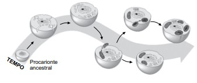

1. A figura ilustra uma possível sequência no processo evolutivo celular, a partir de um procarionte ancestral.
(www.cientic.com. Adaptado)
Tendo em vista o processo ilustrado e as características das células mais evoluídas atuais, é correto afirmar que, ao longo do tempo, houve